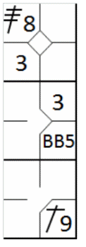
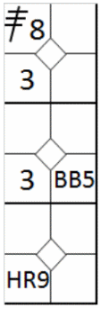
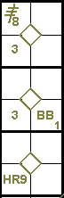

Coups décisifs.
Sous réserve des dispositions de la règle 9.06(g),
lorsqu’un batteur termine la rencontre par un coup sûr qui fait marquer suffisamment de
points pour que son équipe gagne, le scoreur officiel lui créditera uniquement le nombre de bases gagnées par le
coureur qui a marqué le point gagnant, à la condition qu’il ait lui-même avancé d’autant de bases que ce coureur
[OBR 9.06(f)].
Ainsi, si le coureur qui marque le point de la victoire se trouve en troisième base, il s'agira
d'un simple, même si le coup sûr aurait une valeur supérieure. De même, si le coureur est en deuxième base, il s'agira
d'un double et s'il est en première base, d'un triple, à condition que le frappeur-coureur touche effectivement les bases.
En revanche, si le frappeur-coureur s'arrête en première base et qu'un coureur en deuxième base marque le point de la
victoire, il se verra créditer d'un simple, même si le coureur ayant marqué a avancé de deux bases.
Cependant,
Le scoreur officiel créditera au batteur la base atteinte dans le cours naturel du jeu,
même si le point de la victoire est marqué quelques instants avant sur le même jeu. Par exemple, en fin de neuvième
manche, le score étant à égalité avec un coureur en deuxième base, le batteur frappe un coup sûr dans le champ
extérieur. Le coureur marque après que le batteur ait touché la première base et continué sa course vers la deuxième
base, mais très peu de temps avant que le batteur-coureur ait atteint la deuxième base. Si le batteur-coureur atteint
la deuxième base, le scoreur officiel lui créditera un double.
>[OBR 9.06(f) Commentaire].
La seule exception est
Lorsqu’un batteur termine la rencontre avec un coup de circuit à l’extérieur du terrain,
lui et les autres coureurs sur bases ont droit de marquer.
[OBR 9.06(g)].
Prenons deux exemples. En neuvième manche, alors que le score est de 4-4, l'équipe locale est à la
batte et il y a des coureurs en première et troisième base, les situations suivantes se produisent :
Exemple 6:
Le frappeur réussit un coup sûr et le coureur en troisième base marque le point gagnant. Le frappeur se voit
attribuer un simple, quelle que soit la nature de son coup, et le résultat final est de 5 à 4 en faveur de l'équipe
locale. [OBR 7.01(g)(3)].
|

|
action {
batter -> 3B8
}
action {
batter -> BB
}
action {
batter -> 1B9
,
runner1 -> +
,
runner3 -> +
}
|

|
Exemple 7:
Le frappeur envoie la balle hors du terrain. Le coup de circuit est comptabilisé comme d'habitude, et tous les
points marqués sont accordés. Le score final est de 7 à 4 pour l'équipe locale. [OBR 7.01(g)(3) Exception].
|

|
action {
batter -> 3B8
}
action {
batter -> BB
}
action {
batter -> HR9
,
runner1 -> +++
,
runner3 -> +
}
|

|